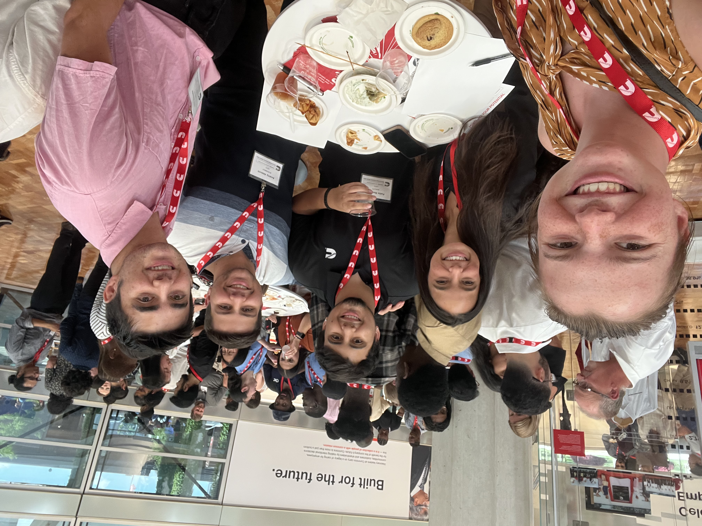
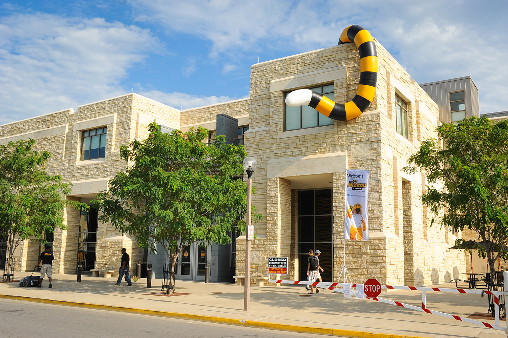

Summer Internship at Cummins
During my internship with Cummins, I was on the HR IT team, which dealt with a lot of user data pertaining to the 60,000+ employees who worked for Cummins. The project I was tasked with aiding was to develop extracts and test deliverables in HCM (Human Capital Management) Cloud, which is an Oracle product that was purchased by Cummins to replace the current Oracle OneSource system of human data management and retrieval. The move of the current OneSource system to HCM is aimed to go live in 2024 as one day switch. An application that I also worked with is Oracle BI Publisher, which is a web-based Oracle service that allowed for Data Visualization as well as more in-depth queries to be built using SQL for testing extracts as well as troubleshooting any issues that were being faced around the delivery deadline.
I had a wonderful time working for Cummins over the summer of 2022. It taught me the processes of the workflow for the career that I would like to have one day and allowed me to work with some amazing people that taught me how to improve in areas that I needed to. The experience and the knowledge that I gained from working with Cummins will aid me significantly in what I do as a lot of the work I did were things that I needed to learn to improve in the field of cloud computing.
TigerHacks 2021
This project was part of a hackathon event at the University of Missouri that took place over 3 days. In the limited amount of time, I and a friend of mine worked around the clock in shifts to get the visual side of the project as well as the software aspect of the game developed. The game was based on the Star Wars pod racing minigame from the Old Republic games but was ported in VR using Unity as our game engine and using the assets that we found and made, we developed the game utilizing C# and .NET frameworks and managed to get it submitted just in time.
Link to the ProjectThis project tested my and my friend’s work ethics as well as helped us develop some quality work while under immense pressure. It also helped us realize to think on our feet as things did not always go the way we wanted to and not having the time to test things thoroughly, we used various other resources and made it work for us.
Working at the Mizzou Store
I worked at the University Bookstore at Mizzou for approximately two years. It was my first job in college, and it was a fun learning experience. My main duties were assisting customers with merchandise, helping with cashier work, and assisting with inventory management. Some stressful times were during sale days before home football games as well as during the back-to-school rush. There were a lot of areas of the store where I had to be aware of what was being done and It helped me develop my communication skills as well as my sales pitches even though I didn’t make any more than my rate if I sold stuff. I did get to see some prominent university figures in the store upon occasion and met a lot of people from different backgrounds while at the store.
My first job in college (and the United States) was quite a shift as I wasn’t used to working with people on a vast scale and it got me out of my comfort zone and taught me some valuable people skills. I made friends just talking with customers and still talk with them today.